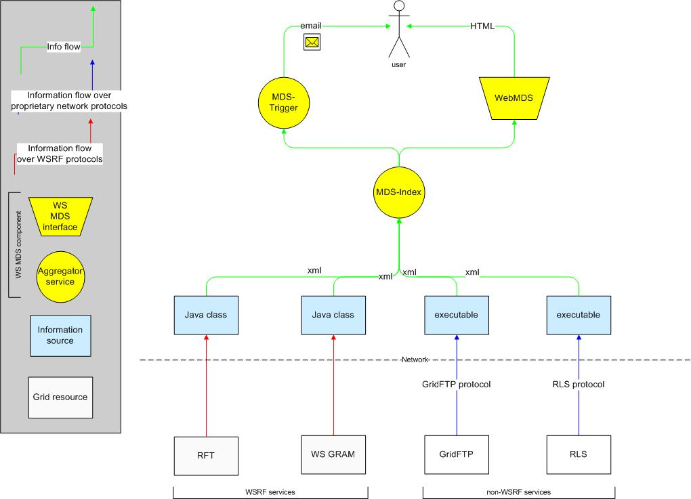

Note: If you haven't done so already, we recommend reading the GT4 Key Concepts guide before continuing. Also keep in mind that in this documentation, the concepts of MDS are written for the latest version, WS MDS (also known as MDS4). The GT4 release includes the Pre-WS component, MDS2, for legacy purposes only - it will be deprecated at some future time as experience is gained with the WS implementation (for information about MDS2, click here.)
The Monitoring and Discovery System (MDS) component of Globus Toolkit V4 (GT4) can streamline the tasks of monitoring and discovering services and resources in a distributed system or Grid :
Both monitoring and discovery applications require the ability to collect information about Grid resources from multiple, perhaps distributed, sources (referred to as information sources.) To meet this need, WS MDS provides:
WS MDS is based on the WSRF implementation. It makes heavy use of XML and Web service interfaces to simplify the tasks of registering information sources and locating and accessing information of interest. In particular, all information collected by aggregator services is maintained as XML, and can be queried via XPath queries (as well as other Web services mechanisms.)
WS MDS has similar features to, but does not interoperate with MDS2. The following is a breakdown of the differences:
[TODO: mention differences with GT3's version of WS MDS - may make a table]
This section will define the major players of WS MDS, then describe how they fit together in a basic framework:
Grid resources are essentially any entity in a virtual organization (VO) from which a user wants to obtain information: for example, a file, a program, a Web service, or another network-enabled service.
Information sources are basically sources of information about a Grid resource you want to monitor. An information source collects the information from the Grid resource and formats it so that it is compatible with WS MDS. Information sources can either be Java classes in the Aggregator framework or executables.
Java classes are supported for WSRF-compliant Web services. Such services need simply to make status and state information available as WSRF resource properties . The following can be specified:
Executables are user-supplied programs that allow information to be obtained from an arbitrary Grid resource (whether or not it's a WSRF-compliant Web service). The program runs periodically to obtain up-to-date data and can either generate the information locally or use a source-specific protocol to access the information remotely. The program must convert non-XML data into an appropriate XML representation.
GT4 is configured to use WS MDS components for discovery and monitoring of GT4 services and provides built-in information sources, as follows:
A service that collects information using the WS-MDS aggregator framework, and then [does something with it]. WS-MDS includes two aggregator services:
A third aggregator service is planned: an MDS-Archive, which will maintain an archive of historical information.
WS MDS aggregator services are distinguished from a traditional static registry such as UDDI by their soft-state registration of information sources and periodic refresh of the structured data that they store. This dynamic behavior enables scalable discovery by allowing users to access “recent” information without accessing the information sources directly.
However, note that the information obtained may not be the absolute latest. Also, as aggregator services do not interpret policy information, there is no guarantee that a user will be allowed to access a service discovered in this way.
The MDS-Index service makes the collected data available as XML documents. More specifically, the data is maintained as WSRF resource properties, thus:
wsrf-get-property can
be used to retrieve resource properties, with the desired resource property
specified via an XPath expression.
[I think you're confusing two tools -- wsrf-query lets you specify an xpath query; wsrf-get-property lets you get a single resource property (specified as the name of the resource property, which is a QName, not an xpath query). -- Laura]For more information, see the MDS-Index service documentation.
The MDS-Trigger service performs user-specified actions (such as sending email or generating a log-file entry) whenever collected information matches criteria determined by the users. MDS-Trigger defines:
For more information, see the MDS-Trigger service documentation.
The key to understanding WS MDS is the aggregator service/information source framework. The basic process is as follows:
An aggregator service registers with a Grid resource via a Web service (WS-ServiceGroup) Add operation. Registrations can be configured either at an MDS-Index service or at a Grid resource.
Registrations have a lifetime: if not renewed periodically, they expire. Thus, an aggregator service is self-cleaning: outdated entries disappear automatically when they do not renew their registrations.
The information source is the 'compatibility' link between the Grid resource and the aggregator service; its purpose is to ensure the information is formatted in a way the aggregator service understands (namely, well-formed XML). In the following diagram, RFT and WS GRAM, both WSRF services, simply pass their information using WSRF protocols to the appropriate Java class whereas GridFTP and RLS use an executable that "talks" to them and converts the information. From that point, all information is sent as XML to the MDS-Index service.

Aggregator services publish the collected information for the user in many different formats. The following diagram show the user receiving information via WebMDS (in the form of a Web browser interface) and the Trigger service (in the form of an email triggered by conditions set by the user.)

Every standard GT4 Web services hosting environment includes a default MDS-Index service. Any GT4 services running in that hosting environment (e.g., GRAM, CAS, RFT) are automatically registered. Thus, each installation on a platform has an MDS-Index that allows you to discover what services are available.
Since virtual organizations (VOs) often need to keep track of all available Grid resources, GT4 also provides a simple method for registering one or more default indexes to be a VO-wide MDS-Index. In this setup, each Grid resource registered to a default MDS-Index is also registered in the VO MDS-Index.
For a more detailed description of a basic deployment within a VO, see Deploying WS MDS in a Virtual Organization.
We only have very preliminary performance data at this time. These data suggest that WS MDS aggregator services can support query rates of the order of tens of queries per second (depending on data sizes) and a few hundred information sources, depending on registration and information update rates. We emphasize that these are not accurate data. We welcome feedback on application requirements.
Note: As stated above, in some cases WS MDS has lower performance than MDS2 (such as raw query rate) due to the immaturity of the underlying technologies, while in other cases it has higher performance than MDS2 due to architectural changes (such as removal of cascading queries.)
The following links include internal or external documents that expand on some of these key concepts:
SHOULD BE IN OTHER DOCS.
[Index | but which guide? Dev/Admin/User ] In the default installation, the most useful information collected and made available by MDS is from: